First generation
Rudy
The Origins
The roots of a timeless value.
Le radici di un valore senza tempo.
The frame: Rudy →Contemporary Italian Eyewear
A matter of perspective
A family.Five stories.One name.
Born in Rome.Made in Italy.
More than eyewear.A way of seeing the world.
I The Name
Two strokes that cross. A meeting of directions, of eras, of points of view. The X is the signature of TEN: carved in stone, set into every frame, standing behind our name the way the city stands behind us.
II Rome
Proportion before decoration. Light used as architecture. Every street a perspective. TEN was born here, and it sees the way Rome taught it to.
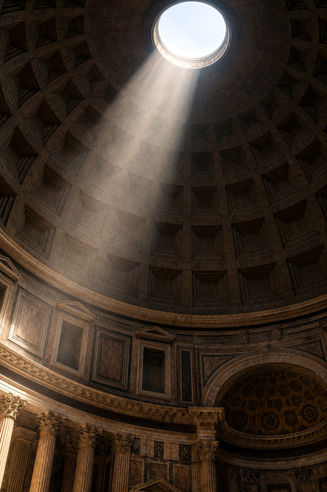
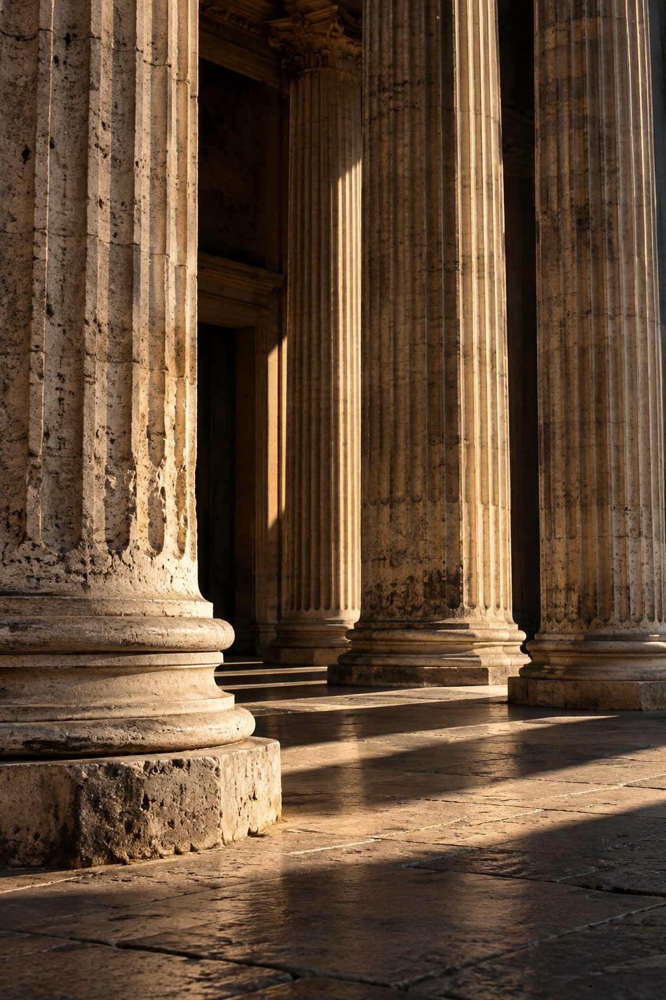
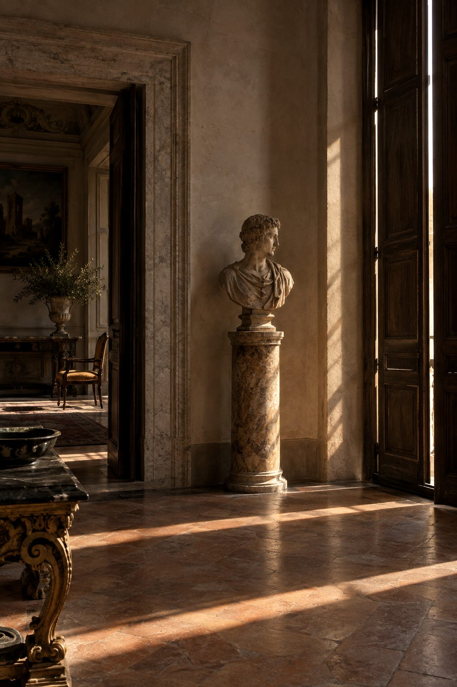
Born in Rome.Made in Italy.
III Four generations
First generation
The Origins
The roots of a timeless value.
Le radici di un valore senza tempo.
The frame: Rudy →Second generation
The Cinema
A character beyond the scene. A vision that sees further.
Un carattere fuori scena. Uno sguardo che vede oltre.
The frame: Pietro →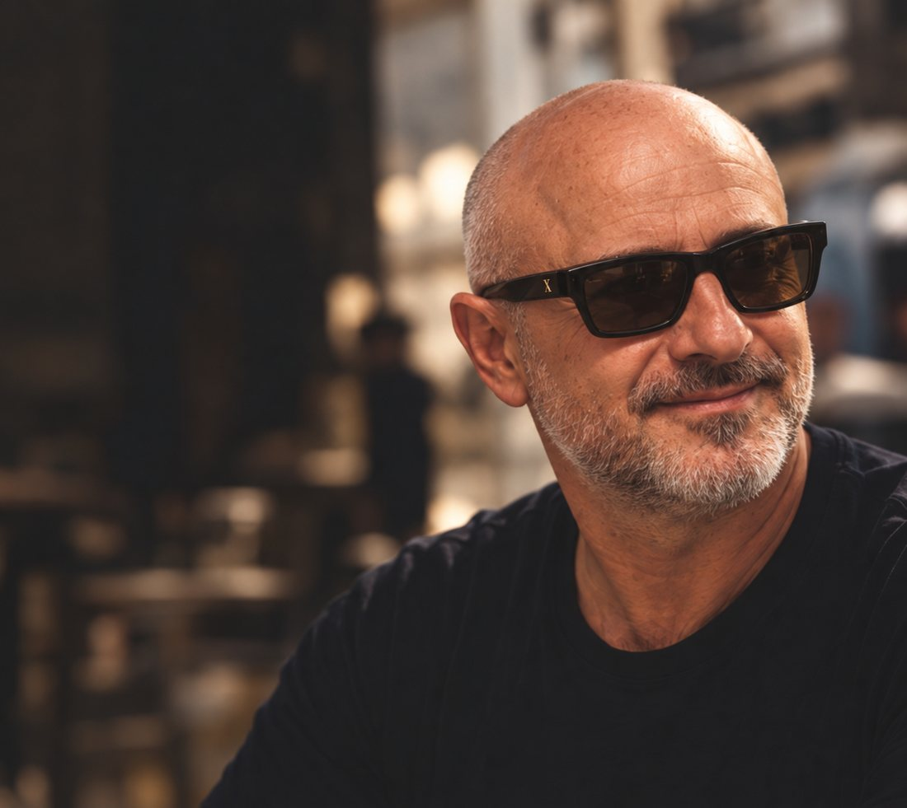
Third generation
The Vision
Ideas and action. Always forward.
Idee e concretezza, sempre in movimento.
The frame: Carlo →Fourth generation
The Next
New experiences. Same values. A vision beyond tomorrow.
Nuove esperienze. Stessi valori. Uno sguardo verso il futuro.
The frame: Matteo →IV The Fifth Story
The story doesn't end with the next generation.
The fifth story has yet to be written.
It could be yours.
Begin your applicationV Stature
We don't look forWe look for
statusure.
TEN is not measured in wealth. We look for people who carry themselves with
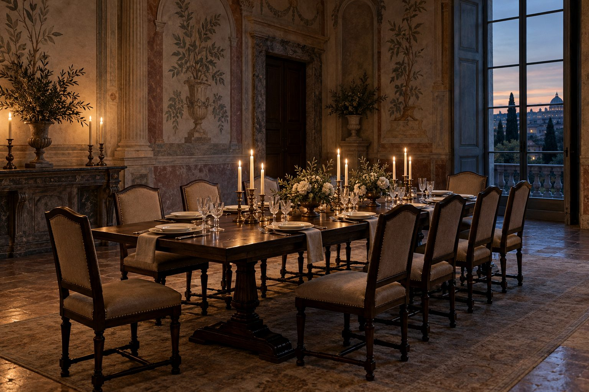
TEN is a circle, not a club. A place at its table is never bought: it is recognised.
VI The Craft
Premium Italian acetate, from 5.5 to 6.5 mm thick, in Black and Tortoiseshell. Sculpted surfaces, never thin.
The signature of the house, set in gold on the outer temple. Discreet, permanent, recognisable.
TEN, engraved on the inner temple: the side only the wearer sees.
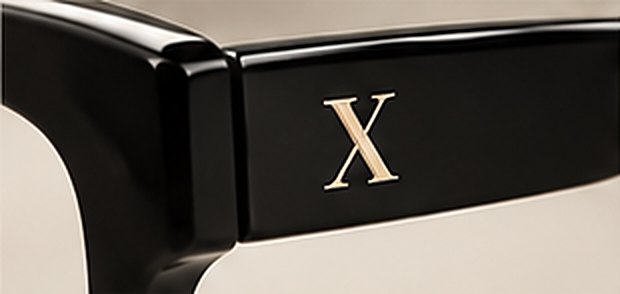
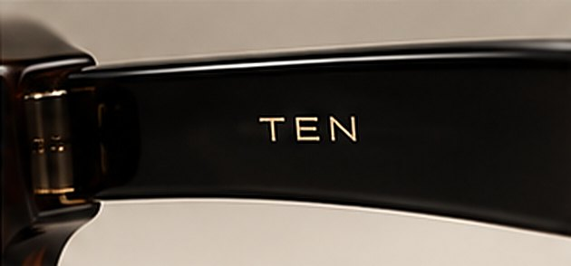
VII The Collection
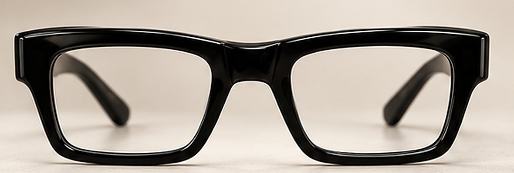
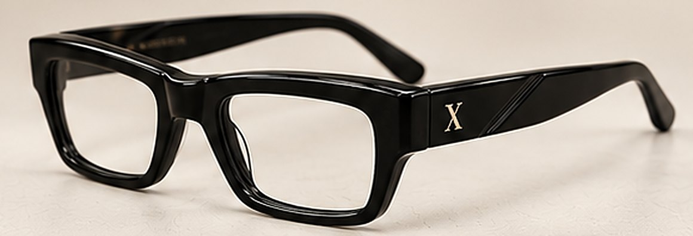
Carlo The Vision
Each frame carries the name, and the character, of the man who wears it. Premium Italian acetate, in Black and Tortoiseshell.
Indicative price €780 – 840
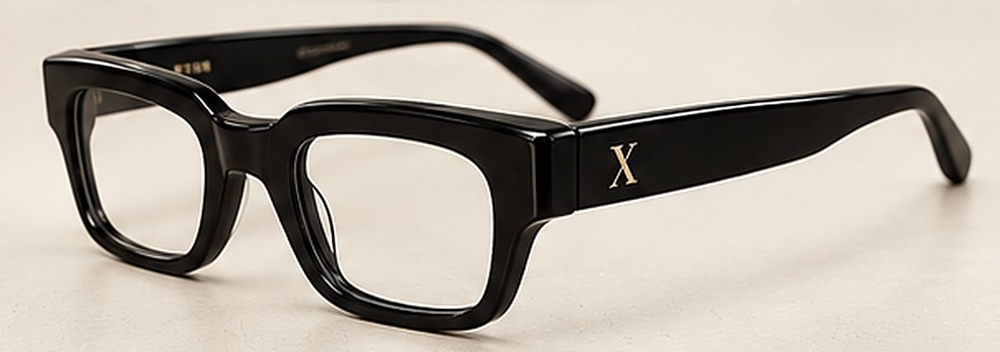
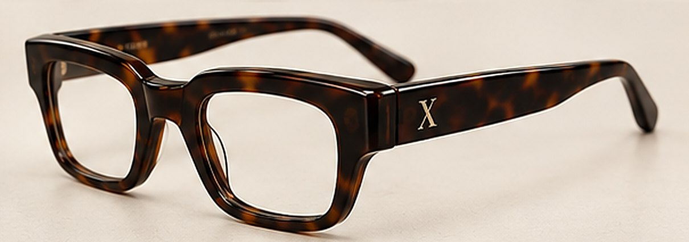
Timeless silhouette
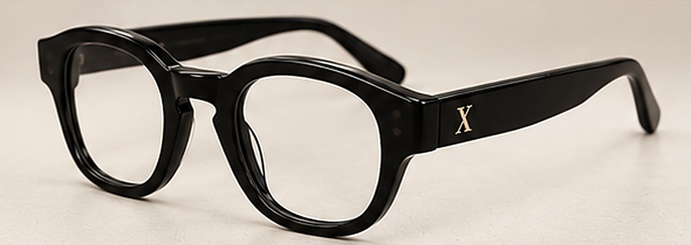
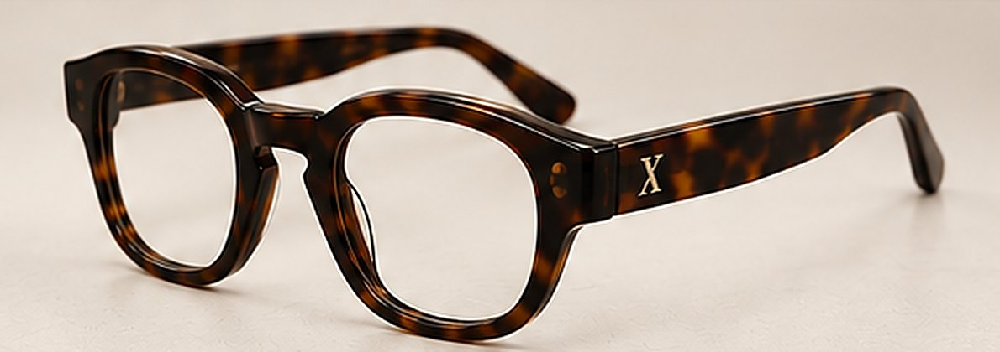
Panto-square silhouette
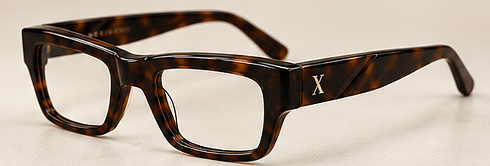
Architectural silhouette · diagonal bevel
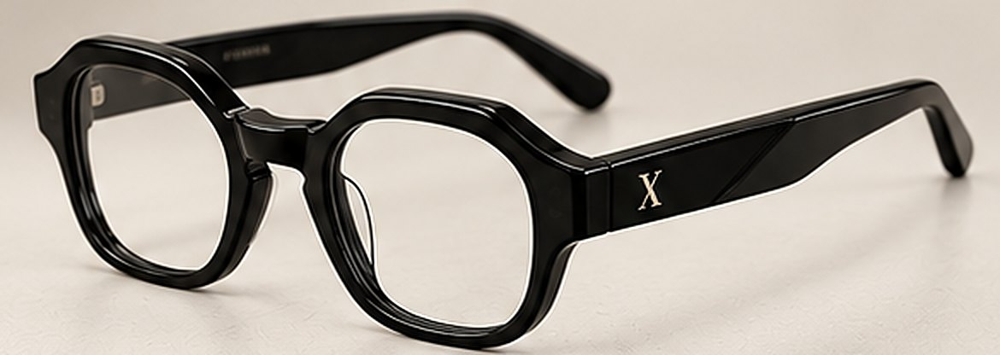
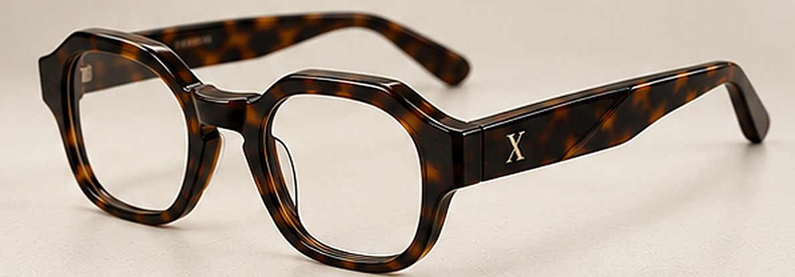
Soft-geometric silhouette · sculpted temples
A TEN is not added to a cart.
It is applied for.
VIII TEN Value
A TEN is not consumed. It is kept, worn, handed on. That is why the house intends to offer its owners the possibility of returning their frame to TEN, under terms that will be set out in full at the time of reservation.
Not an investment, and not a financial product: a promise of continuity between TEN and the people who wear it. Conditions to be defined.
IX The Journey
You are here.
Tell us who you are, not what you own.
Every application is read personally.
If there is a match, you are invited to reserve your frame.
Your frame, your name, your place in the story.
X Apply
The tenth chapter is yours to write. Tell us about yourself: we read every application personally, and we will reply.